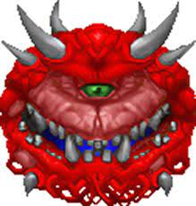

Doom fue creado con la intención de que los jugadores pudieran modificar el juego, y poco después del lanzamiento del primer shareware, comenzó a crearse una comunidad de mapeadores y "modders" que poco a poco se fue especializando. Doom Engine o Id Tech 1 fue liberado al público el 23 de diciembre de 1997, lo que ha dado lugar a diversos sourceports, como Zandronum (una evolución de Skulltag) o GZDoom, un sourceport más potente que añade nuevas características al motor, implementando la posibilidad de emplear iluminación precalculada, introducir modelos 3D en el juego, o emplear 3D floors (característica propia del Build Engine cuyo código fue cedido de manera gratuita por Ken Silverman al equipo de desarrollo de GZDoom). La comunidad de Doom es una de las más activas en torno a un videojuego, habiendo mantenido los Dooms clásicos vivos a través de mods (denominados WADs) que van desde niveles simples hasta conversiones absolutas del juego que pueden llegar a alterar texturas, enemigos, armas, músicas, sonidos o incluso todo el gameplay. Algunos de los mods más relevantes son Brutal Doom, Bloom, Ashes 2063 o Golden Souls,47 considerados muchos de ellos como Total Conversion (TC), al cambiar substancialmente el gameplay de los juegos originales (denominados Vanilla).
